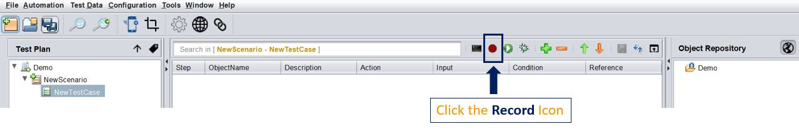
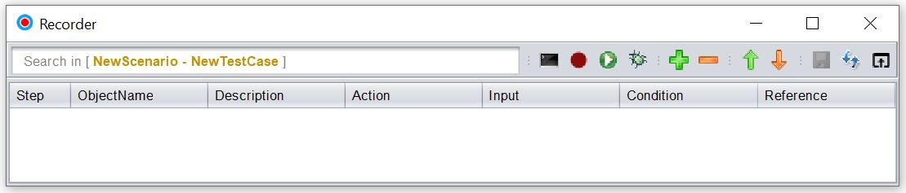
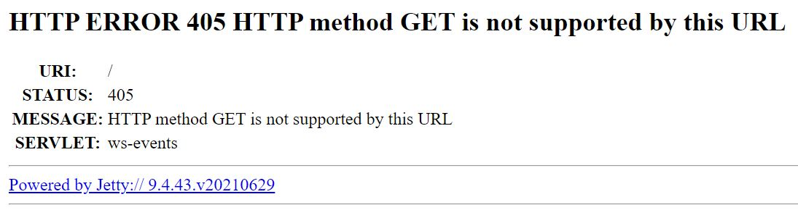

Getting Started
Prerequisites
Hardware Requirements
- RAM: Min. 2GB (preferably 4GB)
- Operating System: Windows (32/64 bit)/ MAC OS/Linux
The tool is built on Java. Hence it will work on any Operating System which supports Java.
Software Requirements
- Java 11 or above
- For customizations, any IDE which supports Java Development (eg. Eclipse, Netbeans, etc.)
Installation
- Step 1 : Download the Latest version of the tool from here.
- Step 2: Extract the zip, into a directory of your choice. The tool as such does not require any "installation" process. Simple extraction of the zip file is enough.
- Step 3: If you are using the tool for Browser Automation, then please ensure that you download and update the appropriate driver in the
lib\Driverslocation where your tool is present.
For example if you are using Chrome, then check the version of the browser installed on your machine from Help > About Google Chrome option. You need to download the same driver version as the browser version.
So, if you see the version as 112.0.5615.138 (Official Build) (64-bit) then you need to download Chrome Driver 112.x. You can do so from here. Once downloaded, unzip it in the the lib\Drivers location where your tool is present.
- Step 4: For
Record,SpyandHeal, you need the browser extention of the tool. From chrome webstore, add the tool extension in your browser. You can directly navigate to this link and add it. Make sure to pin the extension so that you can use it easily.
-
Step 5: To launch the tool, follow the following step(s) :
-
For Windows: Double Click the
Run.batin the tool location - For Mac: Open Terminal in the installation location and then type
chmod +x Run.command. Then Double Click theRun.command. If you see It's Downloaded From Internet Warning then enter the following command in terminalxattr -d -r com.apple.quarantine /path/to/the tool
Start with Recording
The easiset and quickest way to get underway with automation is to record a user journey in the A.U.T. (Application Under Test). To do so, follow the steps below :
- Launch the tool: Double Click the
Run.bat[Windows] orRun.command[Mac]
- Launch the recorder: Click the
Recordicon

The Recorder should open up

-
Connect to the extension: Click the
Browser Extensionwhile having the recorder launched. The extension should show a Green colored [R] indicating that Recorder mode is [ON] -
The extension should look like this :
NOTE :
If you get is an Error in connection or no response after clicking the extension, follow the following steps :
- Hit the following URL while having the recorder launched :
https://localhost:8887/ - Click on
Proceed - You should get a message like this

- Now Repeat the steps explained in Connect to the extension step.